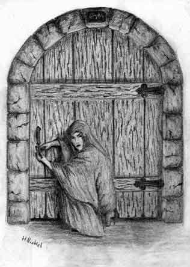
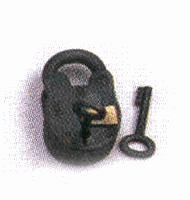

DURATA DELLA PROVA
Ogni prova di questa abilità richiede 1d10 rounds.
STRUMENTAZIONE RICHIESTA
Sono richiesti attrezzi da scasso.
REGOLAMENTO
Attraverso l'uso di questa abilità il ladro è in grado di scassinare serrature di tipo normale o se del caso a combinazione. Il ladro può provare ad aprire un lucchetto solo una volta per livello di esperienza ciò in quanto si presume che qualora non riesca nella prova il lucchetto risulti troppo complesso per le sue abilità. Se la prova ha successo il ladro sarà in grado di aprire e chiudere il lucchetto a piacimento (sempre impiegando i rounds richiesti) senza che sia necessario effettuare ulteriori tentativi. Se la prova fallisce il ladro non sarà riuscito ad aprire il lucchetto. Se, invece, il ladro effettua un fallimento critico il lucchetto sarà bloccato, inoltre il ladro dovrà effettuare una prova di destrezza a -4 per estrarre gli attrezzi dalla serratura ed evitare che questi si rompano, se il check fallisce gli attrezzi si spaccheranno all'interno della serratura (o nel tentativo) e dovranno essere acquistati nuovamente (inoltre risulterà palese che la serratura è stata forzata). Un lucchetto bloccato non può essere più utilizzato (anche con le chiavi) e resta nella posizione (chiuso o aperto) in cui si trovava prima del tentativo, la serratura dunque potrà essere solo forzata. Aprire un lucchetto utilizzando questa abilità non è un'operazione molto rumorosa, si consideri che in un ambiente relativamente silenzioso si potrà udire dell'apertura solo entro 15 metri dalla serratura, se invece ci sono rumori rilevanti coloro che si trovano entro 15 metri dovranno superare una prova di "sentire i rumori" per udire il lavoro del ladro. Il ladro, però, può decidere di agire in estremo silenzio ottenendo un modificatore di +2 al dado base per determinare la durata della prova (ossia entro il limite del massimo punteggio possibile con il dado). In tal caso il ladro dovrà superare una prova di muoversi silenziosamente, qualora questa prova abbia successo il ladro opererà senza dar luogo ad alcun apprezzabile rumore.
FORZARE UNA SERRATURA
Esistono dei metodi alternativi per forzare un lucchetto o una serratura. Questi metodi però otterranno la rottura della serratura, saranno molto rumorosi e richiederanno più tempo nonché l'uso di materiali pesanti o costosi. Si noti che se a seguito di un tentativo di forzare o aprire una serratura questa si blocca non potranno essere utilizzati metodi alternativi per aprirla.
Scalpello di metallo e martello
Questo metodo di forzare una serratura consiste nell'applicare uno scalpello di metallo sulla serratura e martellare con forza per spaccarla. Si tratta di un metodo di apertura rozzo e molto rumoroso il cui fracasso è chiaramente udibile fino a 100 metri di distanza (da 100 metri a 200 metri è richiesta una prova di sentire rumori). Questa tecnica può essere utilizzata anche da chi non è appartenente alla classe dei ladri. Dopo 1 turno di lavoro il personaggio ha una possibilità in percentuale sfondare la serratura pari al doppio del suo punteggio di forza. Chi possiede la competenza locksmithing e riesce in una prova nella stessa ottiene un bonus di +10%, chi possiede la competenza blacksmithing e riesce in una prova nella stessa ottiene un bonus di +20%, i ladri inoltre addizioneranno il 1/4 (per difetto) del loro punteggio in Open Lock. Se la prova riesce la serratura sarà stata sfondata e resa inutilizzabile per il futuro, se invece fallisce la serratura avrà resistito all'impatto del martello e lo stesso personaggio non potrà più provare a forzarla utilizzando questo metodo prima di essere passato ad un nuovo livello di esperienza.
Seghetto e lima
Solo i ladri che abbiano speso almeno 30 punti nell'abilità open lock (rilevano solo i punti spesi con i livelli a prescindere da ogni modificatore) conoscono questo metodo di forzare una serratura. Questa lenta tecnica consiste nel segare il lucchetto dall'interno o, nell'ipotesi di porte di legno non rinforzate, la parte di legno attorno alla serratura. Si tratta di un metodo di apertura abbastanza rumoroso il cui rumore è chiaramente udibile fino a 60 metri di distanza (da 60 metri a 100 metri è richiesta una prova di sentire rumori). Dopo 1 ora di lavoro il personaggio ha una possibilità in percentuale aver aperto la serratura pari al 50% + il suo punteggio di open lock. Se la prova riesce la serratura sarà stata forzata, aperta, e resa inutilizzabile per il futuro, se invece fallisce la serratura avrà resistito e lo stesso personaggio non potrà più provare a forzarla utilizzando questa tecnica prima di essere passato ad un nuovo livello di esperienza. Si noti che i lucchetti di qualità superiore a quella comune non possono essere segati dall'interno e che non può segarsi attorno a serrature in porte di legno rinforzato o di altri materiali più robusti.
Acido
Un'altra tecnica consiste nell'applicazione di una dose di acido sulla serratura (deve trattarsi di un acido alchemico, vedi il link). L'applicazione deve essere effettuata nel modo corretto, di conseguenza, solo i ladri che abbiano speso almeno 35 punti nell'abilità open lock (rilevano solo i punti spesi con i livelli a prescindere da ogni modificatore) possono provare ad utilizzare questo metodo di forzare una serratura (gli altri personaggi ed i ladri con punteggio minore fonderanno solo il lucchetto bloccandolo definitivamente). Dopo l'applicazione dell'acido che richiede 3d6 rounds il lucchetto deve effettuare un tiro salvezza, se il tiro ha successo la serratura non si è aperta ed il lucchetto deve effettuare un secondo tiro salvezza, se questo secondo tiro fallisce la serratura si sarà sciolta in modo scorretto e si sarà definitivamente bloccata. Se, invece, il primo tiro salvezza fallisce la serratura si sarà dissolta aprendosi (in ogni caso non potrà mai più essere utilizzata).
EQUIPAGGIAMENTO SPECIALE
ATTREZZI DA SCASSO COMUNI
(Costo 30 g.p., peso 1 lbs.)
Sono i comuni attrezzi da scasso utilizzati dai ladri per aprire le serrature.
ATTREZZI DA SCASSO DI
PRECISIONE
(Costo 90 g.p., peso 1 lbs.)
Sono attrezzi da scasso di particolare precisione che garantiscono un bonus di
+5% al tentativo di scassinare le serrature.
SCALPELLO E MARTELLO
(Costo 5 g.p., peso 5 lbs.)
Sono gli attrezzi necessari per forzare le serrature.
SEGHETTO E LIMA
(Costo 15 g.p., peso 1 lbs.)
Sono gli attrezzi necessari per segare le serrature o il legno che le circonda.
ACIDO
(Costo variabile, peso 1 lbs.)
Questi acidi sono contenuti in fiale di vetro o di ceramica, materiali che
resistono alla loro corrosione. Esistono acidi di diversa potenza a seconda del
danno che producono al round, tutti vanno bene per sciogliere i lucchetti ma
l'acido meno potente (1d4 danni, 40 g.p. di valore) fa ottenere al lucchetto un
bonus di +1 al tiro salvezza, quello intermedio (1d6 danni, 75 g.p. di valore)
non fa ottenere modificatori, quello forte (1d8 danni, 150 g.p. di valore)
impone una penalità di -1 al tiro salvezza del lucchetto.
LENTE DI INGRANDIMENTO
(Costo 100 g.p., peso 1/2 lbs.)
Quando un ladro esamina per 1d4 rounds una
serratura con una lente di ingrandimento e supera contestualmente una prova di
intelligenza, prima di provare a scassinarla, ottiene
alla successiva prova di open lock un bonus del 5%.
OLI LUBRIFICANTI
(Costo 5 g.p., peso 1 lbs., 3 utilizzi a fiaschetta)
E' comune imbattersi in lucchetti difettosi ed usurati (ad es. arrugginiti,
incastrati) in questi casi il
ladro ottiene una penalità alla prova per scassinarli come indicato nella
descrizione della competenza locksmithing.
L'applicazione di questi oli (azione che richiede 1 round) e la conseguente
attesa che questi agiscano (1d6+4 rounds) permette al ladro di dimezzare le
penalità previste. L'applicazione dell'olio, inoltre, aiuta a
scassinare ogni lucchetto silenziosamente, se applicato correttamente donerà al
ladro un bonus del +10% alla prova di move silently applicata durante il
tentativo di scasso.
BLOCCO DI CERA DURA
(Costo 1 g.p., peso 1 lbs.)
E' un particolare blocco di cera e resine che il ladro può utilizzare per
effettuare il calco di una qualsiasi chiave (o altro piccolo oggetto desideri).
Per poterlo effettuare il ladro deve avere a disposizione la chiave per 1d3
rounds. Con il calco nel blocco di cera il ladro potrà chiedere ad un qualsiasi
fabbricante di lucchetti di produrgli la relativa chiave (si noti che in molte
zone una tale richiesta si considera illegale e può far nascere sospetti). I
personaggi di classe diversa possono usare il blocco allo stesso modo ma, a
differenza dei ladri, devono effettuare una prova di destrezza. Se la prova non
riesce il calco non sarà stato fatto ad opera d'arte e risulterà inutile anche
se il personaggio sarà convinto di averlo fatto bene (solo il fabbricante di
lucchetti potrà dirlo). Ogni blocco può contenere il calco di un'unica chiave
(o piccolo oggetto) ma può essere riutilizzato a piacimento.
I VARI TIPI DI LUCCHETTI E LA LORO FABBRICAZIONE

Nel mondo di Arelia i lucchetti ed in generale le serrature sono pezzi creati da maestri dotati di molto ingegno e grande abilità artigiana. Per poter produrre lucchetti occorre possedere la competenza locksmithing (Ladri, 1 slot, destrezza 0), il materiale necessario alla loro fabbricazione ed un piccolo laboratorio stabile di almeno 15 metri quadri con strumenti dal valore di 200 g.p. (dal costo di manutenzione pari a 3 g.p. al mese). Strumenti di precisione dal valore di ulteriori 300 g.p. (+4 g.p. al mese di manutenzione) conferiscono un bonus di +1 alla prova di produzione.
Esistono, inoltre, degli strumenti portatili che permettono al personaggio di utilizzare la competenza anche "sul campo", tali strumenti che costano 100 g.p. (dal costo di manutenzione pari a 1,5 g.p. al mese) e pesano 10 lbs fanno applicare a chi li usa una penalità di -2 alla prova in questa competenza.
L'uso di una lente di ingrandimento dona in ogni caso un ulteriore bonus di +1 alla prova in questa competenza.
Un ladro che abbia la competenza locksmithing ottiene un bonus del 10% alla sua prova di open lock qualora riesca in una prova in questa competenza (non occorre per disporre di tale bonus che il ladro abbia gli strumenti per utilizzare la competenza).
Esistono diversi tipi di lucchetti da quelli più semplici a quelli più costosi che rappresentano vere e proprie opere d'arte. Tutti i lucchetti hanno mediamente il peso di 1 lbs.
| Tipo di lucchetto | Valore di mercato | Costo del materiale | Tempo di produzione | Modificatore Locksmithing |
Modificatore Open Lock |
| Scadente | 10 g.p. | 3 g.p. | 6 giorni | + 1 | + 10 % |
| Comune | 20 g.p. | 5 g.p. | 10 giorni | Nessuna | Nessuna |
| Buono | 50 g.p. | 11 g.p. | 20 giorni | - 2 | - 10 % |
| Superiore | 125 g.p. | 25 g.p. | 35 giorni | - 5 | - 25 % |
| Eccelso | 300 g.p. | 50 g.p. | 50 giorni | - 9 | - 50 % |
Se al termine del lavoro la prova nella competenza fallisce il lucchetto non sarà funzionante e saranno persi tutti i materiali. Se, invece, la prova riesce il lucchetto sarà stato prodotto con due relative chiavi.
| Tipo di lucchetto | Tiro salvezza contro acido |
| Scadente | 16 |
| Comune | 15 |
| Buono | 13 |
| Superiore | 10 |
| Eccelso | 6 |
LUCCHETTI DI MATERIALI SPECIALI
Invece del ferro, possono essere impiegati anche metalli speciali nella produzione dei lucchetti. Tutte le modifiche devono avvenire per eccesso.
| Tipo di materiale | Modifica al valore e mat. | Modifica al tempo prod. | Modificatore Locksmithing |
Modificatore TS Acido |
Modifica allo sfondamento |
| Bronzo | * 0,5 | Nessuna | Nessuno | Malus -2 | Malus +10% |
| Arcanite | * 1,7 | * 1,5 | - 1 | Bonus +1 | Bonus -10% |
| Mithril | * 2,6 | * 2 | - 2 | Bonus +2 | Bonus -15% |
DUPLICAZIONE DELLE CHIAVI
Chi ha questa competenza può anche duplicare chiavi di lucchetti (nel medesimo laboratorio), per farlo impiega un intera giornata di lavoro per ogni copia che desidera effettuare e deve possedere per tutto il periodo di duplicazione la chiave che vuole duplicare. Al termine della giornata effettua una prova sull'abilità senza alcun modificatore (con una penalità di -3 se dispone solo del calco di cera), se la prova riesce la chiave sarà perfettamente funzionante, se invece fallisce sarà inutile (si noti che per conoscere il risultato la chiave deve essere provata nella serratura). Per duplicare una chiave occorrono 2,5 s.p. e la chiave funzionante ha un valore di mercato pari ad 1 g.p..
LUCCHETTI VECCHI E DIFETTOSI
Con il passare del tempo, con l'azione degli agenti atmosferici e per tanti altri motivi i lucchetti possono divenire difettosi e incrostati di ruggine ed altri elementi. Aprire tali lucchetti utilizzando l'abilità open lock può risultare più difficile (tali modificatori, invece, non si applicano, agli altri metodi di apertura).
| Livello di Usura | Modifica alla prova di open lock |
| Leggera (nessuna) | - 6 % |
| Media (-1) | - 12 % |
| Grave (-3) | - 18 % |
Un personaggio con l'abilità locksmithing può, impiegando un giorno di lavoro e superando una prova nella competenza con l'applicazione del modificatore in parentesi nella tabella precedente, ripulire il lucchetto riportandolo alle sue condizioni originarie. Se la prova fallisce lui non sarà in grado di riparare il lucchetto.
TAVOLA DEI LUCCHETTI
Per determinare casualmente, quando non è previsto altrimenti, il genere di lucchetto che si incontra effettuare i seguenti tiri:
Qualità della fattura
1d20 - (1-4) Scadente; (5-14) Comune; (15-17) Buono; (18-19) Superiore;
(20) Eccelso.
Materiale di fabbricazione
1d20 - (1-14) Ferro; (15-17) Bronzo; (18-19) Arcanite; (20) Mithril.
Usura del meccanismo
1d20 - (1-11) Nessuna; (12-15) Lieve; (16-18) Media; (19-20) Grave.